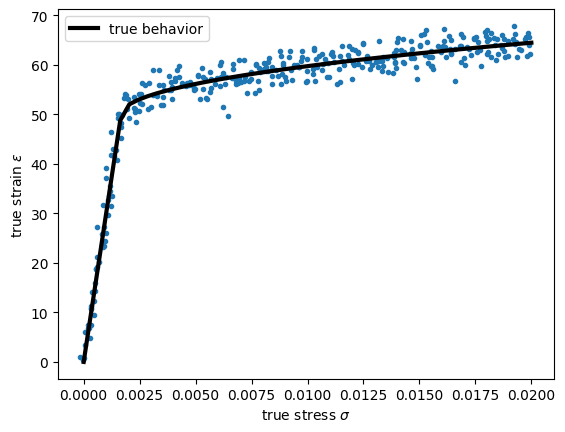
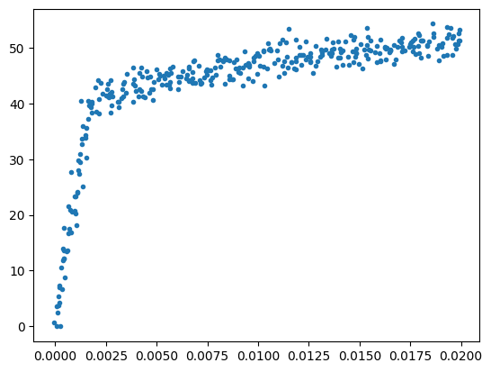
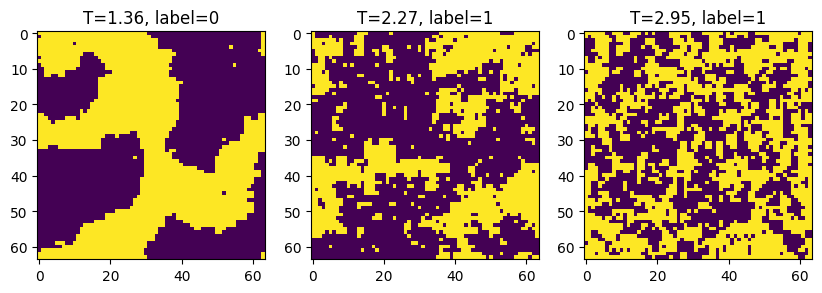
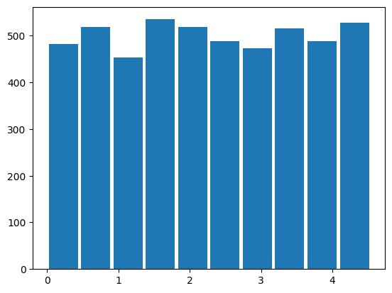
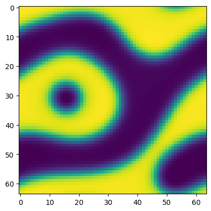
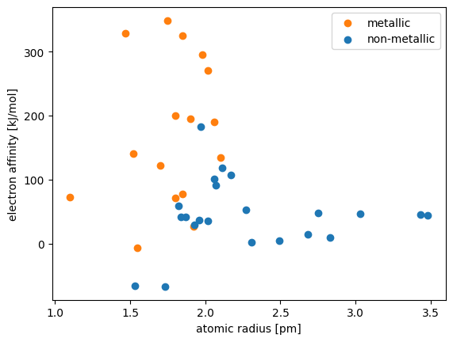
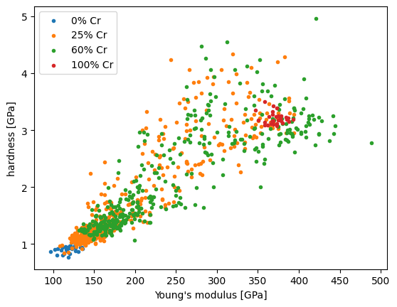
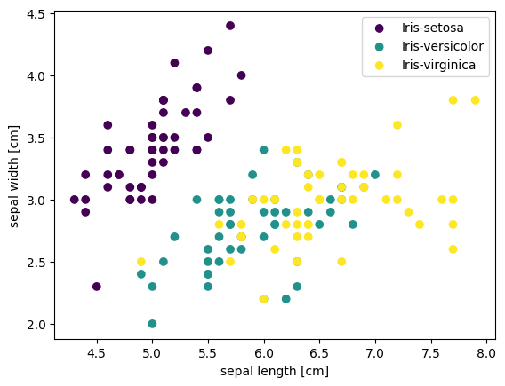
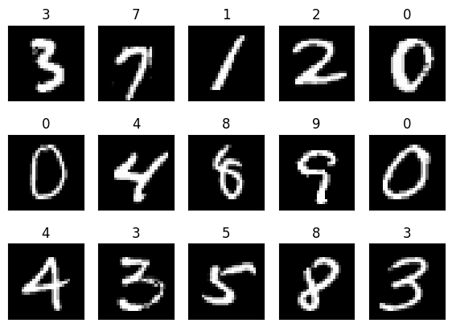
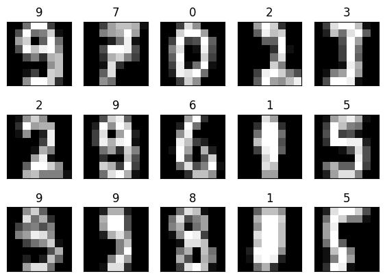

This jupyter notebook is part of the supplementary material for the book “Materials Data Science” (Stefan Sandfeld, Springer, 2024, DOI 10.1007/978-3-031-46565-9). For further details please refer to the accompanying webpage https://mds-book.org.
As a first step, we show how to create the stress-strain dataset. This is also the way how the data in the git repository “MDSdata” was created (please take a look at that repository which contains a function for generating the dataset for different temperatures at the same time).
Define material parameter and constants, create arrays of strain and define amount of randomness:
temperature = 20 # in °C
# just some conversion factors
KSI_to_MPa = 345 / 50
MPa_to_KSI = 1 / KSI_to_MPa
# make the RNG numbers reproducible
rng = np.random.default_rng(0)
steel = TrueStressStrainTemperatureCurves()
eps_y = steel.yield_strain(T=250) # just a fixed yield strain ...
strain = np.append(np.linspace(0,eps_y, 50), np.linspace(eps_y, 0.02, 300))
n_samples = len(strain)
# define material parameter and the respective noise
E0 = 206e3 * MPa_to_KSI
stddev_E0 = 0.05 * E0
E0_values = rng.normal(E0, stddev_E0, size=n_samples)
F_y0 = 345 * MPa_to_KSI
stddev_F_y0 = 0.04 * F_y0
F_y0_values = rng.normal(F_y0, stddev_F_y0, size=n_samples)
strain_hardening_exp = 0.503
stddev_strain_hardening_exp = 0.03 * strain_hardening_exp
strain_hardening_exp_values = rng.normal(strain_hardening_exp, stddev_strain_hardening_exp, size=n_samples)
# set the amount of Gaussian noise for stress, strain, and temperature
stddev_strain = 0.0001
stddev_stress = 0.5
stddev_temperature = 0.1Now, we interate over each single data points, evaluate the material model and superimpose noise. Note that this is computationally not very efficient, though…
fig, ax = plt.subplots()
for i in range(n_samples):
steel.E0 = E0_values[i]
steel.F_y0 = F_y0_values[i]
steel.n = strain_hardening_exp_values[i]
eps, temp, sig = \
steel.stress(
strain[i],
temperature,
scale_strain=stddev_strain,
scale_temperature=stddev_temperature,
scale_stress=stddev_stress
)
ax.plot(eps, sig, '.', c='C0')
steel.E0 = E0
steel.F_y0 = F_y0
steel.n = strain_hardening_exp
eps, temp, sig = steel.stress(np.linspace(strain.min(), strain.max()), temperature)
ax.plot(eps, sig, ls='-', lw=3, c='k', label='true behavior')
ax.legend()
ax.set(xlabel=r"true stress $\sigma$", ylabel=r"true strain $\varepsilon$")[Text(0.5, 0, 'true stress $\\sigma$'),
Text(0, 0.5, 'true strain $\\varepsilon$')]
(350,)
| strain | stress | |
|---|---|---|
| 0 | -0.000131 | -0.034340 |
| 1 | 0.000168 | 1.309808 |
| 2 | 0.000001 | 2.044280 |
| 3 | 0.000442 | 2.180417 |
| 4 | 0.000133 | 3.982092 |
| ... | ... | ... |
| 345 | 0.019678 | 62.485313 |
| 346 | 0.019664 | 65.485887 |
| 347 | 0.019933 | 66.986283 |
| 348 | 0.019689 | 64.734403 |
| 349 | 0.019935 | 64.161328 |
350 rows × 2 columns
The Curie temperature is the temperature above which magnetism is lost in a ferromagnetic material. For a non-dimensional scaled model (Boltzmann constant) \(k_B=1\) and coupling force \(J=1\)) it is
\[T_c = \frac{2}{\ln(1+\sqrt{2})} \approx 2.269\]
In the following we pick microstructures that are below, at, and above the Curie temperature:
Tc = 2 / (np.log(1 + 2 ** 0.5))
# find the element number that is closest to the Curie temperature
idx_at_Tc = np.argmin(np.abs(temperatures - Tc))
print("at Tc: idx_below =", idx_at_Tc, " with T =", temperatures[idx_at_Tc])
# find the element number that is closest to 60% of the Curie temperature
idx_below_TC = np.argmin(np.abs(temperatures - 0.6 * Tc))
print("0.6 Tc: idx_below =", idx_below_TC, " with T =", temperatures[idx_below_TC])
# find the element number that is closest to 130% of the Curie temperature
idx_above_TC = np.argmin(np.abs(temperatures - 1.3 * Tc))
print("1.3 Tc: idx_below =", idx_above_TC, " with T =", temperatures[idx_above_TC])at Tc: idx_below = 2507 with T = 2.2704978255075803
0.6 Tc: idx_below = 1454 with T = 1.3620898989490084
1.3 Tc: idx_below = 3252 with T = 2.950297902973899fig, (ax0, ax1, ax2) = plt.subplots(ncols=3, figsize=(10, 4))
ax0.imshow(images[idx_below_TC])
ax0.set(title=f"T={temperatures[idx_below_TC]:.2f}, label={labels[idx_below_TC]}")
ax1.imshow(images[idx_at_Tc])
ax1.set(title=f"T={temperatures[idx_at_Tc]:.2f}, label={labels[idx_at_Tc]}")
ax2.imshow(images[idx_above_TC])
ax2.set(title=f"T={temperatures[idx_above_TC]:.2f}, label={labels[idx_above_TC]}")
The temperature of the microstructure examples are roughly uniform distributed:
(array([482., 518., 454., 535., 518., 488., 473., 515., 489., 528.]),
array([3.69136398e-04, 4.53857922e-01, 9.07346707e-01, 1.36083549e+00,
1.81432428e+00, 2.26781306e+00, 2.72130185e+00, 3.17479064e+00,
3.62827942e+00, 4.08176821e+00, 4.53525699e+00]),
<BarContainer object of 10 artists>)
… and these are some of the “Ising-DS light” images:
import matplotlib.pyplot as plt
from mdsdata import load_CahnHilliard
images, energies = load_CahnHilliard(simulation_number=0)
plt.imshow(images[10])
print("The dataset contains", images.shape[0], "images.")
print("They are", images.shape[1], "x", images.shape[2], "pixel in size.")
print(f"The minimum energy is: {energies.min(): .1f}")
print(f"The maximum energy is: {energies.max(): .1f}")The dataset contains 989 images.
They are 64 x 64 pixel in size.
The minimum energy is: 457.7
The maximum energy is: 1095.3
import matplotlib.pyplot as plt
from mdsdata import load_elements
atomic_radius, electron_affinity, \
ionization_energy, electronegativity, label = load_elements()
fig, ax = plt.subplots()
ax.scatter(atomic_radius[label==0], electron_affinity[label==0], c='C1', label='metallic')
ax.scatter(atomic_radius[label==1], electron_affinity[label==1], c='C0', label='non-metallic')
ax.set(xlabel='atomic radius [pm]', ylabel='electron affinity [kJ/mol]')
ax.legend()
To see all feature names you can use print(features_names). If you prefer to use the Python package pandas then the following code creates a DataFrame and additionally adds the text-label for each value of the target variable:
| atomic_radius | electron_affinity | ionization energy | electronegativity | target | label | |
|---|---|---|---|---|---|---|
| 18 | 2.02 | 35.12 | 715.60 | 1.80 | 1 | non-metallic |
| 19 | 2.06 | 100.92 | 830.58 | 2.05 | 1 | non-metallic |
| 20 | 2.07 | 90.92 | 702.94 | 1.90 | 1 | non-metallic |
| 21 | 1.97 | 183.30 | 811.83 | 2.00 | 1 | non-metallic |
| 22 | 1.10 | 72.77 | 1312.05 | 2.20 | 0 | metallic |
| 23 | 1.92 | 26.99 | 800.64 | 2.04 | 0 | metallic |
| 24 | 1.70 | 121.78 | 1086.45 | 2.55 | 0 | metallic |
import matplotlib.pyplot as plt
from mdsdata import MDS5
CuCr = MDS5.load_data()
X = CuCr.feature_matrix
y = CuCr.target
print("The feature matrix has", X.shape[1], "features in columns:", CuCr.feature_names)
print(" ... and", X.shape[0], "data records as rows of X.")
print("The class labels 0...3 of Y correspond to:", CuCr.target_names)
modulus = X[:, 0]
hardness = X[:, 1]
material = y
fig, ax = plt.subplots()
ax.scatter(modulus[y==0], hardness[y==0], marker='.', c='C0', label=CuCr.target_names[0])
ax.scatter(modulus[y==1], hardness[y==1], marker='.', c='C1', label=CuCr.target_names[1])
ax.scatter(modulus[y==2], hardness[y==2], marker='.', c='C2', label=CuCr.target_names[2])
ax.scatter(modulus[y==3], hardness[y==3], marker='.', c='C3', label=CuCr.target_names[3])
ax.legend()
ax.set(xlabel="Young's modulus [GPa]", ylabel="hardness [GPa]")The feature matrix has 2 features in columns: ["Young's modulus", 'hardness']
... and 938 data records as rows of X.
The class labels 0...3 of Y correspond to: ['0% Cr', '25% Cr', '60% Cr', '100% Cr']
import matplotlib.pyplot as plt
from mdsdata import DS1
iris = DS1.load_data()
X = iris.data
y = iris.target
class_names = iris.target_names
fig, ax = plt.subplots()
idx = y == 0
ax.scatter(X[idx,0], X[idx,1], c=y[idx], label=class_names[0], vmin=0, vmax=2)
idx = y == 1
ax.scatter(X[idx,0], X[idx,1], c=y[idx], label=class_names[1], vmin=0, vmax=2)
idx = y == 2
ax.scatter(X[idx,0], X[idx,1], c=y[idx], label=class_names[2], vmin=0, vmax=2)
ax.set(xlabel='sepal length [cm]', ylabel='sepal width [cm]')
ax.legend()
import matplotlib.pyplot as plt
import numpy as np
from mdsdata import load_MNIST_digits
rng = np.random.default_rng() # create a random number generator
# If you want to use the testing dataset instead use "train=False":
images, labels = load_MNIST_digits(train=True)
fig, axes = plt.subplots(ncols=5, nrows=3, figsize=(7, 5))
for ax in axes.ravel():
idx = rng.integers(low=0, high=images.shape[0])
ax.imshow(images[idx], cmap='gray', vmin=0, vmax=255)
ax.set(xticks=[], yticks=[], title=f"{labels[idx]}")
… and the “light” version, i.e., the “Alpaydin” handwritten digits dataset:
import matplotlib.pyplot as plt
import numpy as np
# Variant 1: Loading the data
from mdsdata import DS2_light
images, labels = DS2_light().load_data(return_X_y=True)
# Variant 2: Loading the data
from mdsdata import load_Alpaydin_digits
images, labels = load_Alpaydin_digits()
rng = np.random.default_rng() # create a random number generator
fig, axes = plt.subplots(ncols=5, nrows=3, figsize=(7, 5))
for ax in axes.ravel():
idx = rng.integers(low=0, high=images.shape[0])
ax.imshow(images[idx], cmap='gray', vmin=0, vmax=255)
ax.set(xticks=[], yticks=[], title=f"{labels[idx]}")[[ 0 1 6 ... 1 0 0]
[ 0 0 10 ... 3 0 0]
[ 0 0 8 ... 0 0 0]
...
[ 0 0 1 ... 6 0 0]
[ 0 0 2 ... 12 0 0]
[ 0 0 10 ... 12 1 0]]
[0 0 7 ... 8 9 8]
[[ 0 1 6 ... 1 0 0]
[ 0 0 10 ... 3 0 0]
[ 0 0 8 ... 0 0 0]
...
[ 0 0 1 ... 6 0 0]
[ 0 0 2 ... 12 0 0]
[ 0 0 10 ... 12 1 0]]
[0 0 7 ... 8 9 8]